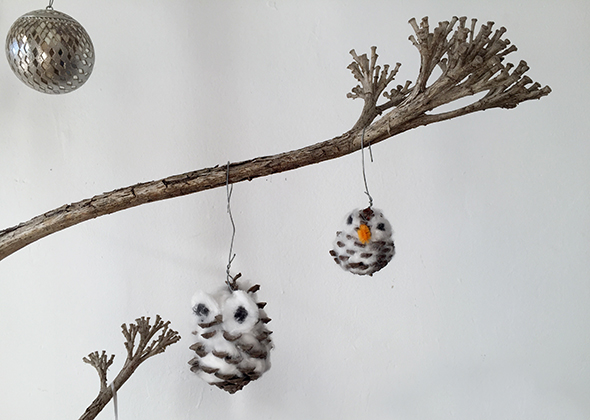
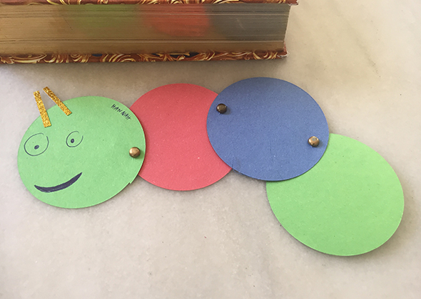
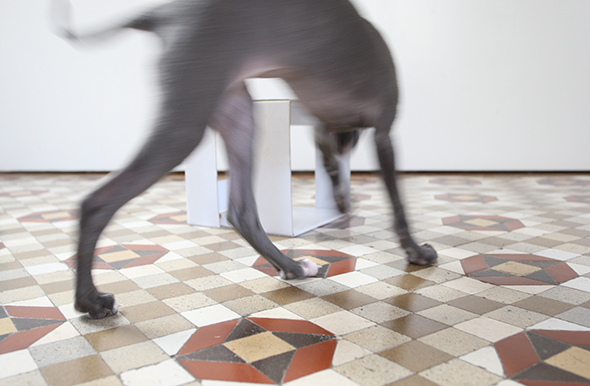

Facebook
Pinterest
Instagram
ES
EN
DE
☰ Menú
Inicio
La casa
Accesorios
Decorar
Instrucciones
Ilustración
Cantimploras personalizadas
Cuaderno de manualidades y actividades 01
App Not Online Anymore
Blog
Fiestas
Navidad
Pascua
Halloween
Carnaval y disfraces
San Valentín
Cumpleaños
Día de la Madre/Padre
Vuelta al cole
Estaciones
Primavera
Verano
Otoño
Invierno
Qué hacer
Juguetes
Juegos
Imprimibles
Recetas y comida
Decoración
Pintar
Experimentos
Al aire libre
Aprender
Animales
Regalos y joyas
Construir y trucos
Otras manualidades
Material
Papel
Cartón
Rollos de papel
Reciclaje
Piedras
Hojas y naturaleza
Tela, coser y tejer
Inicio
›
Blog
›
Animal
Animal
Categoría
Material
Figuras de castañas
Material
Panda en relieve para la pared
Ocasión
Búhos

Imprimibles
Marcapáginas
Actividad
Cabezas de animales
Material
Leer

Actividad
Perro
Ocasión
Conejo bolsas
Imprimibles
CARACOL 02
Material
Lu con jersey
Material
Casa de mandarina
Papel
Mariposa
Actividad
Caseta de perro
Papel
Pez
Animal
Felicidad
